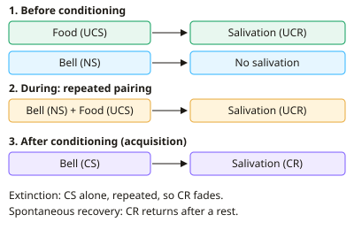

A-level Psychology Year 12 · Topic 12
Learning theories
Learning theories explain how our behaviour is shaped by experience and the environment.
We will study classical conditioning with Pavlov and Little Albert, operant conditioning with Skinner, and social learning theory with Bandura.
Then we look at therapies based on learning theories, and evaluate them using animal research, determinism and ethics.
- 8 subtopics
- 257 questions
- Free: 12.1 notes and 10 questions
In this topic
- 12.1Classical conditioning: Pavlov (1927) and Watson and Rayner (1920) Little AlbertFree below · 28 questions
- 12.2Operant conditioning: Skinner, reinforcement, punishment and schedules of reinforcementOpen in Full Marks · 32 questions
- 12.3Social learning theory: imitation, modelling and mediational processesOpen in Full Marks · 72 questions
- 12.4Applications of learning theories: token economies, aversion therapy and systematic desensitisationOpen in Full Marks · 32 questions
- 12.5Evaluating learning theories: animal research, determinism and ethicsOpen in Full Marks · 32 questions
- 12.6Becker et al. (2002) Eating behaviours and attitudes after television in FijiOpen in Full Marks · 21 questions
- 12.7Fagen et al. (2014) Positive reinforcement training for a trunk wash in Nepal's working elephantsOpen in Full Marks · 19 questions
- 12.8Saavedra and Silverman (2002) Disgust and a specific phobia of buttonsOpen in Full Marks · 21 questions
12.1 · Free notes
Classical conditioning: Pavlov (1927) and Watson and Rayner (1920) Little Albert

Key points
- Classical conditioning is learning by association: two stimuli are paired repeatedly until a neutral stimulus produces a response it did not produce before.
- Pavlov (1927) studied digestion in dogs and noticed they salivated before food arrived. He then ran controlled experiments, with a fistula (tube) in the dog's cheek to measure saliva in drops.
- Before conditioning, food is an unconditioned stimulus (UCS) that produces an unconditioned response (UCR), salivation. This response is reflex and unlearned. A bell or metronome is a neutral stimulus (NS) that produces no salivation.
- During conditioning the NS is presented just before the UCS (temporal contiguity) over several pairings. After this, the NS alone produces salivation, so it has become a conditioned stimulus (CS) and the response is a conditioned response (CR).
- Key terms from Pavlov: acquisition (the CR is learned and strengthens), extinction (the CR weakens when the CS is repeatedly presented without the UCS), and spontaneous recovery (the CR reappears after a rest period when the CS is presented again).
- Pavlov also described stimulus generalisation (similar stimuli to the CS trigger the CR) and stimulus discrimination (the dog responds only to the CS, not to similar stimuli).
- Watson and Rayner (1920) tested whether emotional responses such as fear could be classically conditioned in a human. Their participant was Little Albert (Albert B.), a 9-month-old infant, and the study was a case study with an experimental element.
- Baseline: Albert showed no fear of a white rat, rabbit, dog, monkey, masks or cotton wool, but he did fear a loud noise (UCS) made by striking a steel bar with a hammer behind him.
- At about 11 months, the white rat (NS) was paired with the loud noise (UCS) several times, about seven pairings over two sessions. Albert then cried and crawled away from the rat alone (CS), so a conditioned emotional response (CER) had been learned.
- Five days later Albert also feared a rabbit, dog, fur coat and Santa Claus mask. This is stimulus generalisation, and the study suggests phobias can be learned by conditioning.
- Evaluation of Watson and Rayner: unethical because Albert was caused distress and was not deconditioned (he left the hospital before this could be done), there was no right to withdraw, and the study has a single participant so it is low in generalisability.
- Evaluation of classical conditioning generally: it explains reflex and emotional responses such as phobias and has real-world applications (e.g. systematic desensitisation). It is reductionist, it is based largely on animal research, and it ignores cognition.
In more detail
- Worked labelling (Little Albert): before: loud noise (UCS) → fear (UCR); rat (NS) → no fear. During: rat + loud noise → fear. After: rat (CS) → fear (CR).
- Worked labelling (Pavlov): bell (NS) + food (UCS) → salivation (UCR); after many pairings, bell (CS) → salivation (CR).
- Timing matters: conditioning works best when the NS comes just before the UCS (forward conditioning). If the NS comes after the UCS, little or no learning happens.
- Exam tip: the same stimulus gets a different label at each stage. The rat is a neutral stimulus before conditioning and a conditioned stimulus after it.
Practice
Classical conditioning: Pavlov (1927) and Watson and Rayner (1920) Little Albert: 10 questions
Pick an answer to check it, or open the answer for the explanation.
1. In Pavlov's classic experiment with dogs, which item was the unconditioned stimulus (UCS)?
- The sound of the bell
- The ticking metronome
- The food
- Salivation to the bell
Show answer
C: The food. Food naturally triggers salivation without any learning, so it is the UCS. The bell starts as a neutral stimulus and only later becomes a conditioned stimulus.
2. After repeated pairings, a dog salivates when it hears only the bell. Salivation to the bell alone is called the…
- conditioned response
- neutral response
- unconditioned stimulus
- unconditioned response
Show answer
A: conditioned response. A response produced by a learned stimulus (the CS) is the conditioned response. The UCR is the unlearned response to the UCS (food).
3. A child has painful injections at a clinic that smells of antiseptic. Later the smell alone causes fear. What is the conditioned stimulus?
- The pain of the injection
- The smell of antiseptic
- The child's fear
- The injection needle
Show answer
B: The smell of antiseptic. The smell began as the neutral stimulus and, after pairing with pain (UCS), now triggers fear alone. That makes it the CS. The fear is the CR.
4. Which procedure would lead to extinction of a conditioned response?
- Pairing the CS with a stronger UCS
- Presenting the UCS without the CS
- Presenting the NS after the UCS
- Presenting the CS repeatedly without the UCS
Show answer
D: Presenting the CS repeatedly without the UCS. Extinction happens when the CS is repeatedly presented without the UCS. The association weakens and the CR fades.
5. A dog's salivation to a bell has been extinguished. After a rest, the bell sounds and the dog salivates again. This is…
- stimulus discrimination
- acquisition
- stimulus generalisation
- spontaneous recovery
Show answer
D: spontaneous recovery. The temporary reappearance of an extinguished CR after a rest period is spontaneous recovery. It shows extinction does not completely erase the association.
6. In Watson and Rayner's study, what was the unconditioned stimulus used with Little Albert?
- A loud noise from striking a steel bar
- Albert's crying
- The white rat
- The rabbit
Show answer
A: A loud noise from striking a steel bar. The loud noise naturally produced fear (UCR) without learning. The white rat was the neutral stimulus that became the CS.
7. Days after conditioning, Albert also cried at a rabbit and a fur coat. This is an example of…
- extinction
- stimulus discrimination
- spontaneous recovery
- stimulus generalisation
Show answer
D: stimulus generalisation. Responding to stimuli similar to the original CS (the white rat) is stimulus generalisation. Albert did not discriminate between furry objects.
8. Which is a valid ethical criticism of Watson and Rayner's study?
- Albert's data were falsified
- Albert was given drugs to increase fear
- Albert was an adult who could not withdraw
- Albert's fear was not removed before he left the hospital
Show answer
D: Albert's fear was not removed before he left the hospital. Albert was deliberately distressed and was never deconditioned, so there was a risk of lasting psychological harm. The other options are not features of the study.
9. A dog's saliva to a bell alone: trial 1 = 0 drops, trial 5 = 4 drops, trial 10 = 9 drops, trial 15 = 10 drops. Which process does this show?
- Extinction
- Stimulus discrimination
- Acquisition
- Spontaneous recovery
Show answer
C: Acquisition. The response to the CS increases with repeated pairings and then levels off. That pattern of the CR being learned and strengthened is acquisition.
10. A CS was presented alone 20 times and a dog salivated on 15 of them. What percentage of trials produced the conditioned response?
- 85%
- 25%
- 75%
- 65%
Show answer
C: 75%. 15 ÷ 20 = 0.75, which is 75%. A distractor such as 25% is the proportion of trials with no response.
Keep going in Full Marks
Full Marks has 28 questions on Classical conditioning: Pavlov (1927) and Watson and Rayner (1920) Little Albert (18 more than here), set out in practice levels. You also get notes and 3D models for all 8 subtopics of Learning theories, plus games, timed exams and past papers.
On your exam board
- AQATopic 5: Approaches in psychology
- EdexcelTopic 4: Learning theories
- CambridgeTopic 4: The learning approach
Not in the OCR specification.